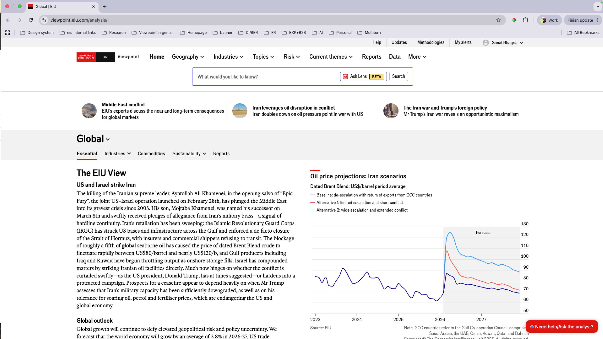

The problem
Underutilised & high bounce
The global homepage failed to meet user needs, leading to significant drop-off before users reached the content they needed.
An underutilised global homepage with a high bounce rate. Rather than waiting for access to real users, we used AI-powered synthetic research — interviewing 32 simulated user personas to uncover what the homepage needed to be.
Problem statement
The EIU's global homepage is a critical entry point for users across industries — from risk analysts and economists to business strategists and policy researchers. Yet the page was underutilised and failing to connect users to the content they came for.
Users primarily seek geography, industry, theme, and risk-level content, but the global page wasn't effectively surfacing any of these. The result was a high bounce rate at exactly the moment we needed to retain users.
The homepage now features AI Lens in beta — the multi-turn co-pilot built as part of the search evolution work — integrated directly into the home screen. This case study documents the discovery research that informed that direction.
The problem
Underutilised & high bounce
The global homepage failed to meet user needs, leading to significant drop-off before users reached the content they needed.
Opportunity
Increased engagement & retention
A well-redesigned homepage could improve retention, credibility, and support EIU's pivot toward financial services.
Risk
Diverse needs, complex personalisation
The challenge: implementing a personalised experience that serves every user segment without becoming irrelevant to any.

Current state — the EIU Viewpoint homepage, now featuring AI Lens (beta) integrated directly into the home screen
Synthetic user research
"The highlight of this project is that we used our AI capabilities and conducted Synthetic user research — a user research without users."
Who are synthetic users?
A synthetic user is an AI-generated profile that attempts to mimic a user group, providing artificial research findings produced without studying real users. A synthetic user will express simulated thoughts, needs, and experiences.
How to use the findings
We treat insights produced by synthetic users as hypotheses that need testing — directional signals to guide design decisions, not validated truth.
How did we do it?
We created PersonaGPT — a custom GPT — to simulate our users for synthetic interviews. By inputting data on industries, organisations, and roles of actual Viewpoint users, PersonaGPT generated representative synthetic users, enriching them with its knowledge of various industries and roles. This gave us control over the user profiles while leveraging broad AI expertise.
Resources used
AI tools
Other tools
We also reviewed analytics dashboards and client feedback sheets to verify the analysis against real behavioural data.
What was the process?
Learnt about Custom GPT
Custom GPT Persona Bot was used. Initially invested time learning how to configure and use it effectively for user simulation.
Created discussion guide
Questions were drafted to create foundational knowledge of role, build context about platform usage, and learn about homepage preferences across user types.
Conducted interviews
Interviews were conducted in the same structured way for all 32 synthetic users — ensuring consistency across the research corpus.
Downloaded transcripts
At the end of each interview, the transcript was downloaded to be fed into NotebookLM for subsequent AI-assisted analysis.
Started manual analysis
Used Google Sheets and Miro to manually analyse initial findings — building a first layer of insight before applying AI tools.
Used NotebookLM for synthesis
All 32 interview transcripts were fed into NotebookLM. Research analysis was then conducted by asking targeted questions — surfacing patterns across users at scale.

Research analysis — NotebookLM output showing key takeaways and unique needs of users by role
Key takeaways from 32 synthetic interviews
All users
Shared needs across roles
Role-based differences
Different parameters of usage
Homepage direction
What the redesign needs
Discovery phase — in progress
This is an ongoing project. The synthetic research phase has completed and we now have a rich set of directional hypotheses to carry forward into the design phase.
Next steps include validating key findings with real users through targeted usability sessions, then translating insights into wireframes and a redesigned homepage concept.
What comes next